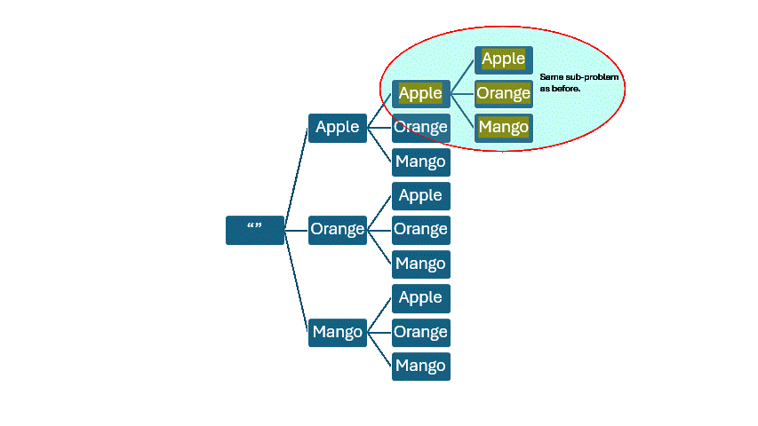

Imagine we want to plant, in a straight line, three fruit trees Apple, Orange, and Mango. What are the possible ways these trees can be planted? The only restriction we have is that Apple and Orange trees can’t be placed next to each other. Find all possible arrangements.

Output:
[apple, mango, orange]
[orange, apple, mango]
[orage, mango, apple]
[mango, orange, apple]
Why are we doing rsult.removeLast()? Clue: Try to trace the execution for the first possible fruit. It can be either apple, mango or orange. If we add apple, there is no way to get mango as first unless we remove it.
How to arrive at the right solution? Imagine the simple case. A tree with three fruits as children. For each child, assume we want a similar tree as child. This will not terminate. But, that is alright. Try this first. Then, add condition to terminate it (say after adding three levels). Then, complete the problem constraints.
Output:
[apple, apple, apple]
[apple, apple, orange]
[apple, apple, mango]
[apple, orange, apple]
[apple, orange, orange]
[apple, orange, mango]
[apple, mango, apple]
[apple, mango, orange]
[apple, mango, mango]
[orange, apple, apple]
[orange, apple, orange]
[orange, apple, mango]
[orange, orange, apple]
[orange, orange, orange]
[orange, orange, mango]
[orange, mango, apple]
[orange, mango, orange]
[orange, mango, mango]
[mango, apple, apple]
[mango, apple, orange]
[mango, apple, mango]
[mango, orange, apple]
[mango, orange, orange]
[mango, orange, mango]
[mango, mango, apple]
[mango, mango, orange]
[mango, mango, mango]